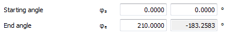

|
|
|


角度误差
当用户使用工作节线或齿轮减速级次输入一个闭合曲线（齿轮1）时，必须从0°开始，结束于360°。因此，齿轮2的转动也必须是360°（或其整数倍）。如果不是这样，这将导致错误。

图21.6：齿轮2的微小误差。φe为183.256而不是180°
然而，这个误差没有影响，因为预定义的齿轮侧隙足够大。
English Original
Angle error
When you use an operating pitch line or gear reduction progression to input a closed curve (Gear 1), it must start at 0° and finish at 360°. For this reason, the rotation of gear 2 must also be 360° (or a multiple of this). If not, this will result in an error.
Figure 21.6: Minor error for Gear 2. φe is 183.256 instead of 180°
However, this error has no effect because the predefined gear backlash is large enough.